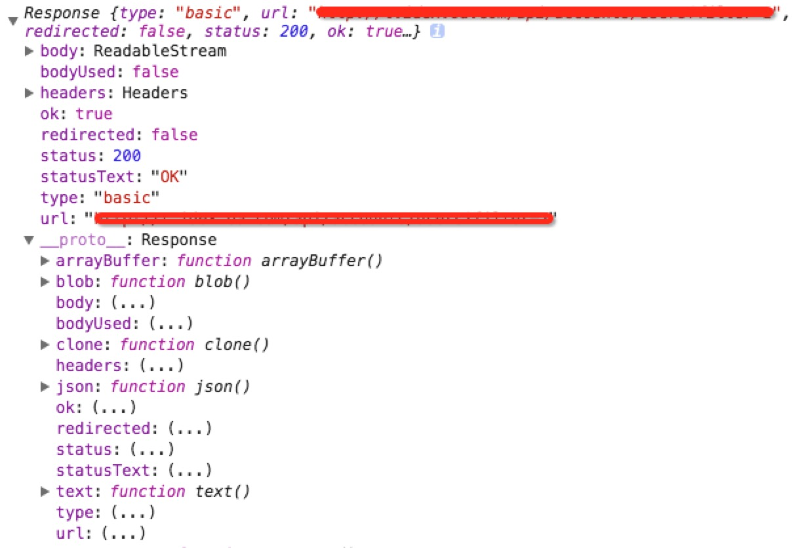
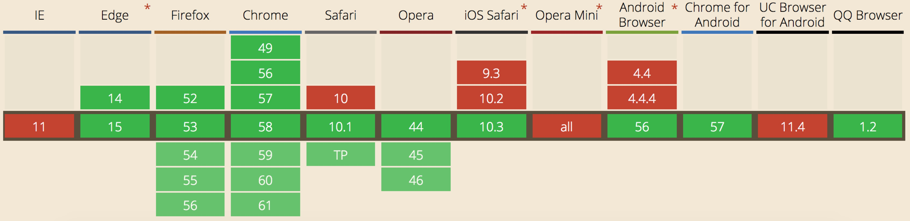

fetch api
作为传说中的xhr替代品，现在fetch api已经被开始在一些前端项目中使用了，比如阿里的一些产品已经将jq的ajax模块切换到fetch下了。个人感觉fetch api会渐渐替代xhr成为主流。
什么是fatch api呢，我们来看个例子。
1、简单使用
var myImage = document.querySelector('img');
fetch('flowers.jpg').then(function(response) {
return response.blob();
}).then(function(myBlob) {
var objectURL = URL.createObjectURL(myBlob);
myImage.src = objectURL;
}).catch(e) {
// throw e
};
怎么样，是不是很直观的了解了fetch api的使用，从上例中我们可以看出两点：
1、fetch api返回的是一个promise对象，使用es7提供的async/await特性，可以改写为
var myImage = document.querySelector('img');
async function fetchDemo() {
try {
const response = await fetch('flowers.jpg');
const blob = await response.blob()
const objectURL = URL.createObjectURL(blob);
myImage.src = objectURL;
} catch(e) {
// throw e
}
};
fetchDemo();
这样看起来是不是爽多了，只是现在这个特性还只是在草案中，虽然babel已经可以支持了。
2、第一个then函数里面处理的是response的格式，这里的response具体返回如下：

可见response对象提供了多种转换格式的方式，用于将返回值的类型转换为blob，json，也可以使用clone等方法，这里就不赘述了。
response的状态和返回数据也可以从ok，status，statusText等对象中获取到，还能直接读取到返回值的Headers信息。
2、综合使用
fetch作为替换xhr的api，需要足够底层，这样，就需要支持各种场景的使用。下面是一些综合使用示例。
a）头部和请求构造
// 头部构造，使用Header类
let myHeaders = new Headers()
myHeaders.append("Content-Type", "text/plain");
const params = {
method: 'GET',
headers: myHeaders,
mode: 'cors',
cache: 'default',
credentials: 'include' // 这个很重要，当值为include时才会带cookies请求
};
// 传参
fetch('flowers.jpg', params)；
// 如果需要复用请求的参数和头部等对象，可以采用Request Class
const myRequest = new Request('flowers.jpg', params);
fetch(myRequest);
b）请求参数（body）构造
fetch api是使用通过构造body部分直接进行的，可构造的类型为
- arrayBuffer()
- blob()
- json()
- text()
- formData()
fetch("/api", {
method: "POST",
body: new FormData(document.getElementById('xx'))
});
3、使用中需要知道的
a）兼容性
 如caniuse所示，fetch的在ie上全军覆没，在其他很多浏览器上也有各种问题，所以，这里推荐使用fetch polyfill
fetch polyfile fetch-jsonp polyfile
b）cookies传递
必须在header参数里面加上 credentials: 'include'配置，才会如xhr一样将当前cookies带到请求中去
c）fetch和xhr的不同
fetch虽然底层，但是还是缺少一些常用xhr有的方法，比如能够取消请求（abort方法）。
fetch在服务器返回4xx， 5xx请求时是不会抛出错误的，这里需要手动通过，response中的ok字段和status字段来做判断。
4、展望
xhr盛行多年，fetch api从写法上给前端带来了一些新的想法，这无疑是好的。同时，我也相信，前端慢慢会出现类似的fetch包装库，方便大家使用吧